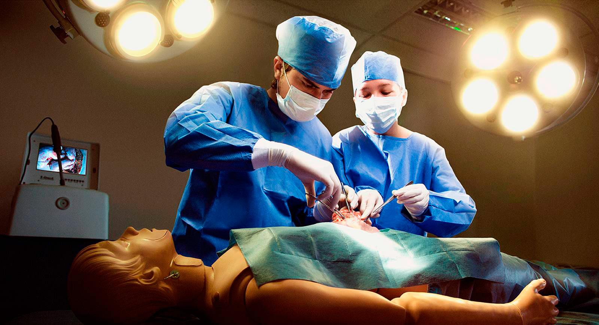
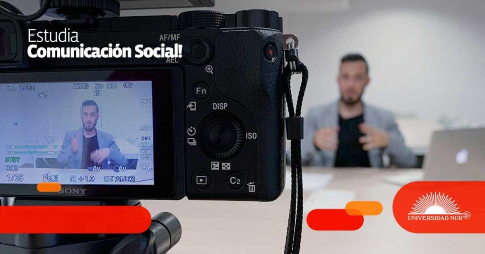

Carreras Destacadas
Ingeniería en Sistemas
Aprende a desarrollar software, gestionar bases de datos y liderar proyectos tecnológicos.
Ingeniería Civil
Diseña y construye infraestructuras esenciales para el desarrollo urbano y rural.
Arquitectura
Da vida a tus ideas diseñando espacios funcionales y sostenibles para el futuro.

Medicina
Forma parte del cambio, salvando vidas y contribuyendo al bienestar de la sociedad.
Derecho
Desarrolla habilidades para interpretar y aplicar la ley en diferentes contextos legales.
Administración de Empresas
Conviértete en un líder organizacional capaz de gestionar proyectos exitosos.

Comunicación Social
Crea estrategias de comunicación efectivas y contribuye al cambio social.
Psicología
Estudia la mente humana y los procesos psicológicos para ayudar a las personas a superar sus desafíos emocionales y mentales.